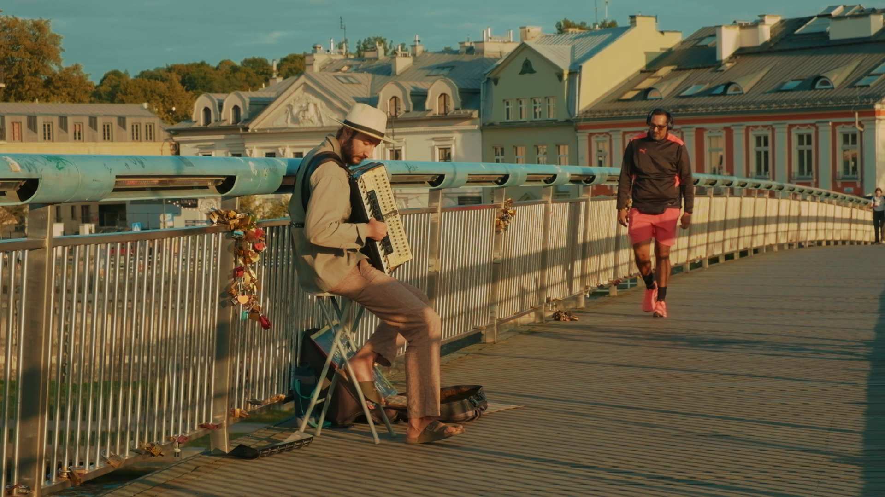
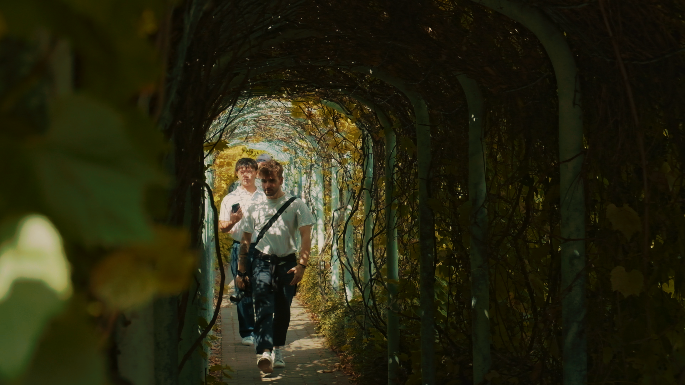
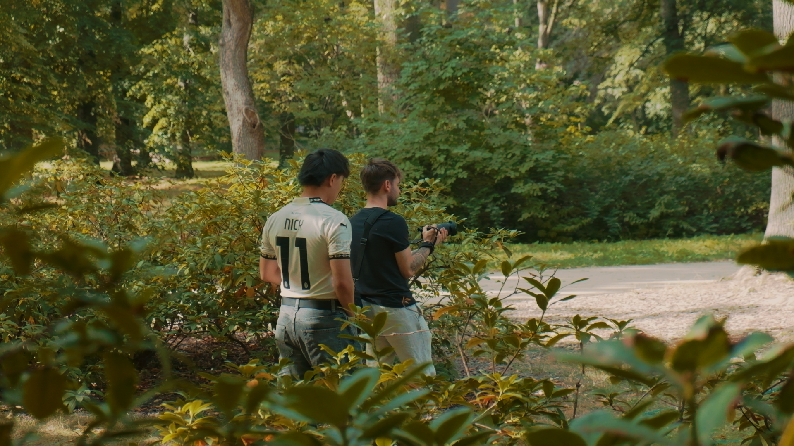
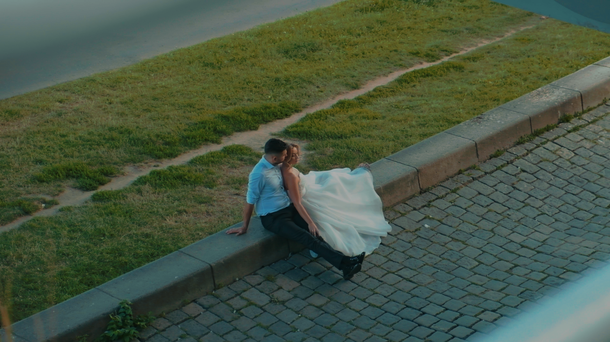
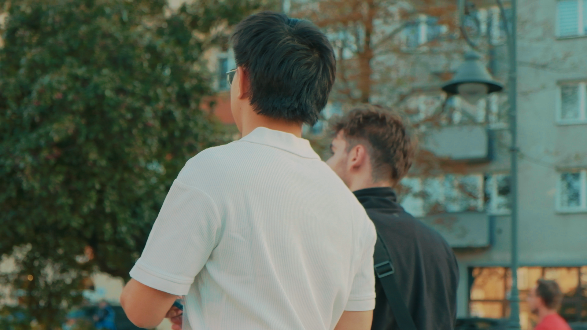
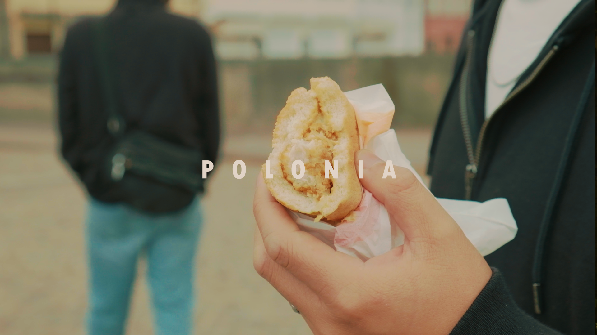
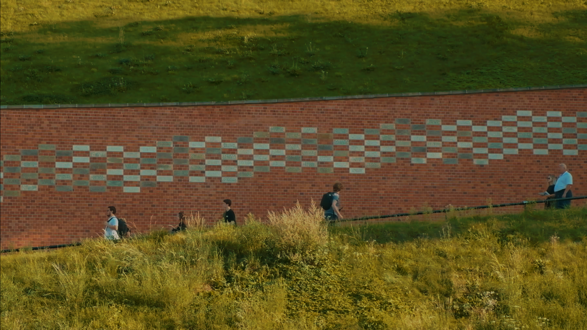
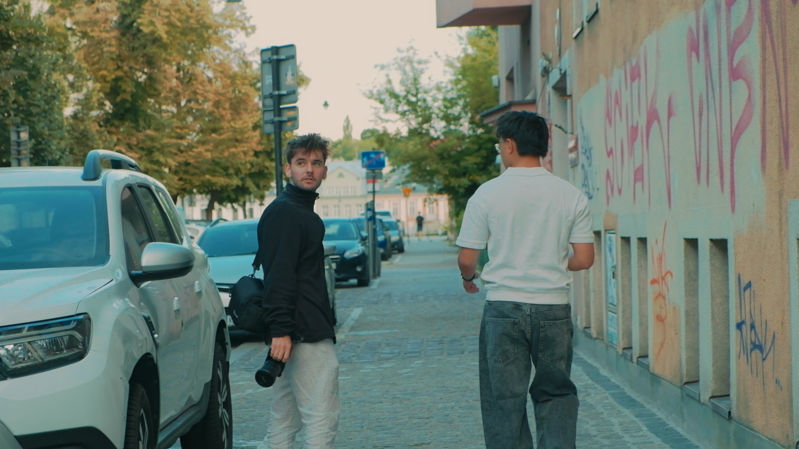
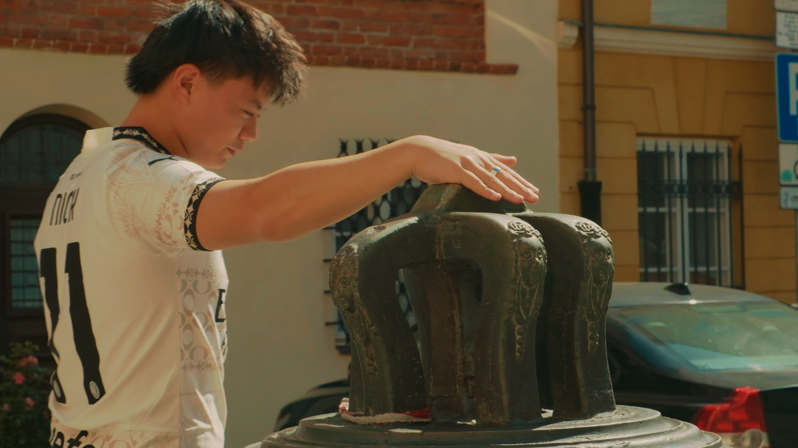

Polonia, 2025
CONCEPT
This video was created after a holiday in Poland with two friends, with no specific video format or goal in mind. It became a challenge between myself and I, trying for the first time to make sense of my timeline without having any pre-production thoughts on the footage, but just figuring it out as I went in the editing process.
It was also one of the videos I used as test run to sharpen my process on DaVinci Resolve, both in editing and in color-correction and color-grading.
“What if for this time I just focus
on the post-production?”







